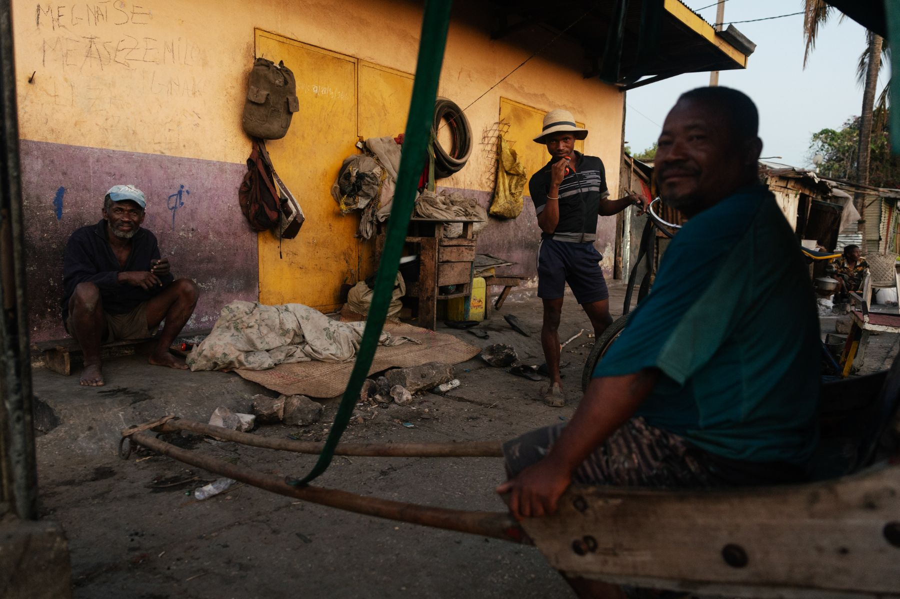
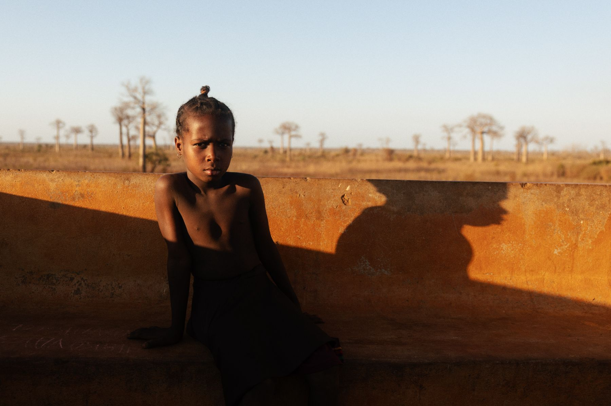
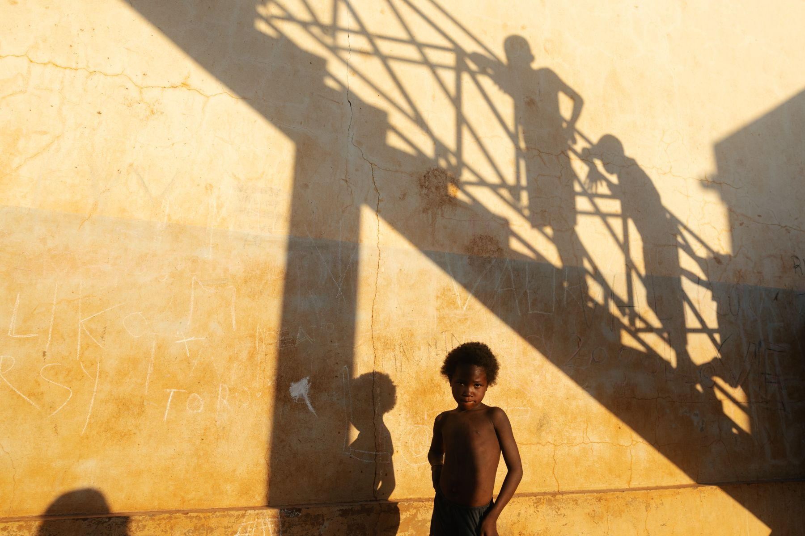
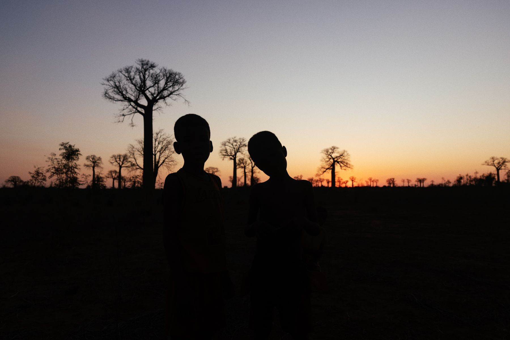
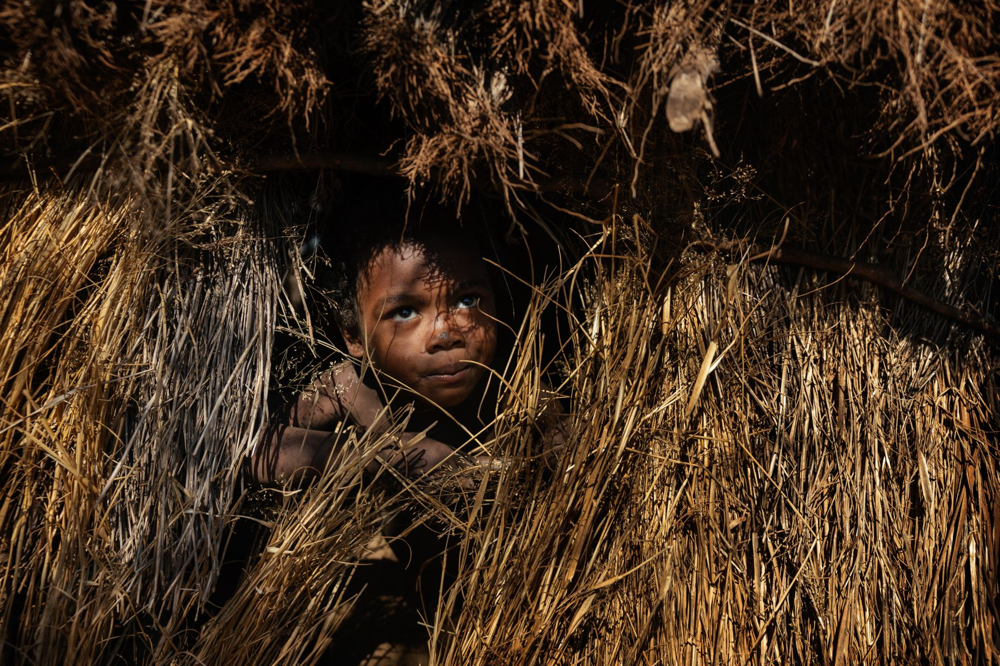
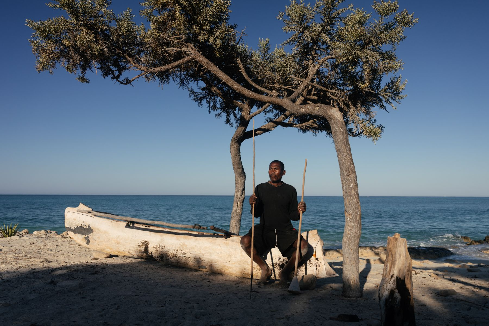

Thomas Cytrynowicz
Documentary
Commissions
Fine art
Lifestyle
About
Contact

Street life in Tulear
01 / 06

Street life in Tulear
02 / 06

Street life in Tulear
03 / 06

Street life in Tulear
04 / 06

Street life in Tulear
05 / 06

Street life in Tulear
06 / 06
Back
Documentary
01
/ 06
Close
‹
›